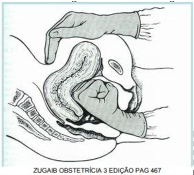

Questão 1 · Hemorragias pós parto HPP e rotura uterina · Obstetrícia · 4000185527Você foi solicitado a comparecer ao alojamento conjunto para avaliar um sangramento em puérpera 6 horas após parto normal induzido. É o primeiro parto de mulher de 20 anos, sem comorbidades, que foi induzido porque a gestação alcançou 41 semanas de gravidez e não havia sinais de parto. A puérpera estava orientada no tempo e espaço, pálida e sudorética, pulso no, com frequência cardíaca de 125bpm, pressão arterial de 100x60mmHg, útero hipotônico e com sangramento vermelho vivo vazando o absorvente e molhando o lençol. Considerando os dados obtidos, a tabela de grau de choque fornecida abaixo e o cálculo do índice de choque, assinale a alternativa CORRETA.

A Trata-se de choque grave, considerando a frequência cardíaca e índice de choque maior que 1
B Trata-se de choque moderado, considerando o volume do sangramento e índice de choque igual a 1,25
C Trata-se de choque compensado, considerando a pressão arterial sistólica e índice de choque igual a 0,8
D Trata-se de choque moderado, considerando o nível de consciência e índice de choque igual a 0,8
Questão 2 · Hemorragias pós parto HPP e rotura uterina · Obstetrícia · 4000184134Gestante primigesta de 24 anos, 32 semanas e 5 dias de gestação, chega ao Pronto-Socorro da Obstetrícia referindo dor de cabeça de forte intensidade associada a náuseas e mal-estar gástrico. Ao exame clínico: PA de 152x115 mmHg, FC 82 bpm, dinâmica uterina presente e fraca, altura uterina de 34 cm, batimentos cardíacos fetais de 150 bpm, edema +++/4 de MMII, hiperre exia patelar. Recebeu Hidralazina endovenosa e dose de ataque de Sulfato de Magnésio pelo esquema de Pritchard. Após 1 hora, refere dor abdominal de forte intensidade. Ao exame obstétrico, útero hipertônico e BCF 98 bpm. Foi encaminhada para o parto cesáreo com feto vivo, masculino, peso de 1.748 g e placenta com aspecto de descolamento de 20% de sua área total. Após histerorra a, útero mostrava-se bastante amolecido, pastoso, hipoinvoluído. Foi realizada massagem uterina, seguida de infusão de ocitocina. Qual é o próximo passo?
A Ergotamina.
B Balão de Bakri.
C Misoprostol.
D Sutura de B-Lynch.
Questão 3 · Hemorragias pós parto HPP e rotura uterina · Obstetrícia · 4000183722Com relação às medidas de prevenção e ao tratamento da hemorragia pós-parto (HPP), assinale a alternativa correta.
A O uso de ocitocina endovenosa como medida terapêutica na HPP apresenta início de ação em 5 minutos e meia-vida de 15 a 60 minutos.
B O uso de ocitocina profilática após todos os partos é a medida mais eficaz na prevenção da HPP, devendo ser inserida como procedimento de rotina. O esquema mais utilizado após partos vaginais é a injeção de 20 Ui de ocitocina, em bolus, por via endovenosa.
C O clampeamento oportuno do cordão umbilical, associado à sua tração controlada, bem como a vigilância/massagem uterina após dequitação placentária podem substituir o uso universal de ocitocina profilática, pois apresentam taxas de eficácia semelhantes.
D A utilização de maleato de metilergometrina como medicação uterotônica no tratamento da HPP é contraindicada principalmente para pacientes hipertensas.
E O uso de ácido tranexâmico no tratamento da HPP fica restrito aos casos de sangramentos decorrentes de causas específicas, como coagulopatias e uso de medicações anticoagulantes, uma vez que o ácido tranexâmico é uma medicação antifibrinolítica.
Questão 4 · Hemorragias pós parto HPP e rotura uterina · Obstetrícia · 4000182976Puérpera de 28 anos apresenta sangramento uterino em grande quantidade, quarenta minutos pós-parto vaginal se m intercorrências. AP: diabetes gestacional, polidrâmnio e feto GIG. Exame físico: FC 110 bpm, PA 100x60 mmHg, útero com tônus diminuído. O índice de choque, o principal fator de risco para hemorragia pós-parto e o tratamento inicial recomendado são, respectivamente:
A 1,83; diabetes gestacional; infusão de metilergometrina.
B 1,1; sobredistensão uterina; infusão de ocitocina + ácido tranexâmico.
C 1,83; sobredistensão uterina; infusão de ocitocina + misoprostol.
D 1,1; diabetes gestacional; infusão de ocitocina + ácido tranexâmico.
Questão 5 · Hemorragias pós parto HPP e rotura uterina · Obstetrícia · 4000182291A hemorragia puerperal é a segunda causa de morte materna no Brasil, estando atrás apenas dos distúrbios hipertensivos. Entre as causas para hemorragia pós-parto, a principal é:
A atonia uterina
B restos placentários
C distúrbios da coagulação
D lacerações do canal de parto
Questão 6 · Hemorragias pós parto HPP e rotura uterina · Obstetrícia · 4000181883Segundo as Recomendações Assistenciais Para Prevenção, Diagnóstico e Tratamento da Hemorragia Obstétrica (Estratégia Zero Morte Materna por Hemorragia Pós-Parto), são considerados fatores de alto risco para hemorragia pós- parto:
A Cesariana ou cirurgia uterina prévia.
B Quatro ou mais partos vaginais.
C Placentação anômala (acretismo)
D História prévia de atonia uterina ou hemorragia obstétrica.
E Corioamnionite.
Questão 7 · Hemorragias pós parto HPP e rotura uterina · Def inição · Fatores de risco · 4000191025Em relação à hemorragia pós-parto (HPP), é correto afirmar:
A parturientes que apresentaram hiperdistensão uterina são de risco para HPP.
B não se deve fazer ocitocina de rotina após os partos se a parturiente não for de risco para HPP.
C em casos de parto vaginal, a perda de sangue avaliada em até 1 000 mL é considera normal.
D a primeira medida ao se constatar atonia uterina é administrar ocitocina IM e IV.
E a administração de metilergonovina está proscrita na assistência aos casos de HPP.
Questão 8 · Hemorragias pós parto HPP e rotura uterina · Obstetrícia · 4000169979Dentre as hemorragias no pós-parto (HPP), está uma das grandes causas de morte materna que tem justi cado uma campanha para que se atinja ZERO mortes maternas. Assinale a alternativa na qual constam fatores determinantes de hemorragia no pós-parto.
A trabalho de parto prolongado – atonia – pré-eclâmpsia.
B diabetes – isoimunização – trabalho de parto taquitócico.
C feto macrossômico – polidrâmnio – trabalho de parto taquitócico.
D anemia – trabalho de parto prolongado – polidramnio.
E rotura prematura de membranas – trabalho de parto prolongado – macrossomia fetal.
Revisar: possível letra faltando em enunciado
Questão 9 · Hemorragias pós parto HPP e rotura uterina · Obstetrícia · 4000169559Puérpera, G1P1, pós-parto imediato sem episotomia, com RN pesando 3.560g, APGAR 9/10, após indução de parto por pós-datismo. Na primeira hora pós-parto, apresentou: taquicardia (FC: 150bpm), hipotensão (PA: 80/40mmHg) e sangramento vaginal aumentado, com útero contraído (globo de segurança de pinard) na altura da cicatriz umbilical. Qual a hipótese diagnóstica mais provável e a conduta a ser tomada?
A Atonia uterina, administrar ocitocina EV.
B Atonia uterina, avaliar possibilidade de curetagem uterina.
C Laceração de canal de parto, revisar trajeto de parto.
D Infecção puerperal, administrar antibioticoterapia de amplo espectro.
Questão 10 · Hemorragias pós parto HPP e rotura uterina · Obstetrícia · 4000169290Tercigesta, admitida na maternidade em trabalho de parto. Durante o 3º período clínico do parto apresentou dor súbita e hemorragia intensa que evoluiu para choque hipovolêmico. Ao exame físico, na palpação abdominal, observou-se ""fuga da matriz"". Foram realizados tratamento do choque, manobra da Taxe e procedimento de Huntington. De acordo com esses dados, o quadro clínico dessa paciente é compatível com:
A Rotura uterina.
B Inversão uterina aguda.
C Encarceramento placentário.
D Retenção de fragmentos placentários.
Questão 12 · Hemorragias pós parto HPP e rotura uterina · Obstetrícia · 4000166252Primípara, 34 anos de idade, pós-parto vaginal imediato, induzido com 38 semanas por pré-eclâmpsia, apresenta sangramento vaginal em moderada intensidade. Exame físico: corada, PA 100 x 60 mmHg, FC 110 bpm, sangramento vaginal moderado, útero amolecido na altura da cicatriz umbilical. Foi iniciada a administração de volume por via intravenosa em acesso calibroso, administrada ocitocina e realizada massagem uterina. As próximas medidas, para o melhor cuidado da paciente, incluem:
A misoprostol e inserção de balão intrauterino.
B ergotamina e tamponamento uterino com compressas.
C misoprostol e histerectomia.
D ergotamina e realização de sutura de B-Lynch.
Questão 13 · Hemorragias pós parto HPP e rotura uterina · 4000165639Gestante de 30 anos de idade, primigesta, 33 semanas de gestação e portadora de hipertensão arterial crônica. Está em uso de metildopa 1,0g por dia e chega ao Pronto-Socorro com queixa de sangramento vaginal e dor abdominal há 1 hora. Ao exame físico: descorada ++, PA 148 x 90 mmHg, FC 118 bpm, altura uterina 37 cm; BCF 102 bpm. Na palpação não há distinção das partes fetais, tônus uterino aumentado. Ao exame especular colo sem lesões, com presença de sangue escurecido em fundo de saco. Ao toque vaginal, colo médio, medianizado, pérvio para 3 cm, bolsa íntegra e tensa. No puerpério imediato, paciente apresentou sangramento uterino importante havendo necessidade de hemotransfusão. Após administração de ácido tranexâmico e uterotônicos, sem resposta. Houve indicação de intervenção cirúrgica, com o seguinte achado operatório. Qual é a próxima conduta na sequência de atendimento cirúrgico?

A Histerectomia total.
B Sutura compressiva.
C Ligadura de artérias hipogástricas.
D Observação.
Questão 14 · Hemorragias pós parto HPP e rotura uterina · Obstetrícia · 4000164968Multípara apresenta hemorragia importante logo após realização de parto normal e nascimento de feto a termo. A hipótese a ser considerada como a causa mais provável dessa hemorragia é:
A distúrbio da coagulação
B restos placentários
C laceração de trajeto
D atonia uterina
Questão 15 · Hemorragias pós parto HPP e rotura uterina · 4000164693Em casos de hemorragia puerperal, existe a possibilidade do uso do balão intrauterino. Assinale a alternativa que indica corretamente a situação em que ele está indicado.
A Presença de neoplasia cervical.
B Suspeita de laceração uterina.
C Suspeita de retenção de restos placentários.
D Controle do sangramento pós cesariana nos casos de placenta prévia.
E Controle do sangramento uterino decorrente de placenta percreta.
Questão 16 · Hemorragias pós parto HPP e rotura uterina · Obstetrícia · 4000164419Uma mulher de 34 anos de idade teve parto fórcipe por apresentação occípito-sacra, realizado com bloqueio de pudendo. O recém-nascido pesou 3.560 g e foi realizada episotomia mediolateral direita, sem intercorrências. Na enfermaria, após 1,5 hora do parto, começou a apresentar sangramento vaginal importante. Ao exame, encontra-se corada, com sinais vitais normais, abdome ácido, útero palpável 3 cm abaixo da cicatriz umbilical, contraído. Observa-se sangramento com coágulos em grande quantidade no absorvente. Entre as condutas abaixo, a melhor para este caso é
A massagem uterina e pesquisa de distúrbios de coagulação sanguínea.
B misoprostol por via vaginal.
C infusão rápida de ocitocina por via endovenosa.
D revisão imediata do canal de parto.
Questão 17 · Hemorragias pós parto HPP e rotura uterina · Assistência ao puerperio · Obstetrícia · 4000163722MSS, 38 anos, G5P4A0, IG 40 semanas, apresentando polidrâmnio é admitida no centro obstétrico com feto cefálico, 3 contrações 50 segundos em 10 minutos, colo com 7 cm dilatação, bolsa das águas íntegras. Com relação às medidas de prevenção da hemorragia pós-parto (HPP), nesta paciente, qual a afirmativa correta?
A Acesso venoso calibroso, reserva de sangue e ocitocina 10 unidades intramuscular, imediatamente após o nascimento.
B Amniotomia , metilergometrina 0,2 mg intramuscular, imediatamente após o nascimento, seguida de tração controlada do cordão umbilical.
C Expressão do fundo uterino, associada à tração controlada do cordão umbilical, ácido tranexâmico 1,0 g endovenoso e reserva de concentrado de hemáceas.
D Obtenção de acesso venoso calibroso, elevação dos membros inferiores, monitorização dos sinais vitais e tônus uterino a cada 15 minutos, durante a primeira hora pós-parto.
Questão 18 · Hemorragias pós parto HPP e rotura uterina · Obstetrícia · 4000163467A hemorragia pós-parto constitui importante causa de morbimortalidade materna. Sobre essa situação, é correto afirmar:
A A atonia uterina compreende a principal causa de hemorragia pós-parto e o seu manejo passa por medidas farmacológicas e cirúrgicas.
B A ocorrência de parto precipitado não constitui fator de risco para hemorragia puerperal.
C Após a realização de manobras de compressão e drogas uterotônicas, a histerectomia puerperal é a primeira medida a ser tomada nos casos de hemorragia puerperal.
D Em virtude do aumento da volemia materna, as perdas sanguíneas da hemorragia puerperal raramente acarretam alterações hemodinâmicas maternas.
E O diagnóstico de restos planetários é de pouca importância na assistência aos casos de hemorragia puerperal.
Questão 19 · Hemorragias pós parto HPP e rotura uterina · 4000151638No puerpério imediato, após parto normal de uma multípara cuja gestação evoluiu com polidrâmnio, houve necessidade de realizar laparotomia ainda no centro obstétrico. Durante a laparotomia, foi realizada a técnica cirúrgica de B-Lynch. Em qual situação está indicado esse procedimento:
A Inversão uterina.
B Atonia uterina.
C Laceração de trajeto.
D Restos placentários.
Questão 20 · Tonus atonia uterina · 4000147047Nos casos de hemorragia pós-parto, a medicação de primeira linha no tratamento da atonia uterina é
A ácido tranexâmico.
B metilergometrina.
C misoprostol.
D ocitocina.
E terbutalina.
Questão 21 · Hemorragias pós parto HPP e rotura uterina · Puerpério · Def inição · 4000145933A hemorragia pós-parto (HPP) está entre as principais causas de óbito materno. O Ministério da Saúde, juntamente com a OPAS/OMS, instituiu a estratégia Zero Morte Materna por Hemorragia Pós-Parto, que consiste em treinamento em massa das equipes assistenciais, a m de diagnosticar, de maneira adequada, e tomar as medidas para a correção do quadro de HPP em tempo hábil. Essa estratégia vem salvando vidas. Sendo assim, assinale a alternativa que apresenta a definição de HPP de acordo com a FIGO.
A sangramento excessivo no pós-parto imediato que leve à queda dos níveis hematimétricos em 20% dos níveis basais
B sangramento excessivo, pós-parto, devido à atonia uterina
C sangramento excessivo, no 4.o período, devido à atonia uterina ou à retenção placentária
D sangramento excessivo no 4.o período, devido à atonia uterina e(ou) à retenção placentária e(ou) a lesões do trajeto
E perda sanguínea acima de 500 mL após o parto vaginal ou acima de 1.000 mL após o parto cesáreo em 24 h ou qualquer perda sanguínea pelo trato genital capaz de causar instabilidade hemodinâmica
Questão 22 · Hemorragias pós parto HPP e rotura uterina · Sangramento segunda metade da gestação · 4000145925Intercorrências obstétricas obstetrícia patológica Uma parturiente (G3 PC1 A1), com idade gestacional de 39 semanas e três dias e gestação de risco habitual, na admissão, refere trabalho de parto de início espontâneo. Apresenta, ao exame físico, altura uterina de 41 cm, dinâmica uterina de quatro contrações de 35” em 10’ e batimentos cardíacos fetais de 148 bpm. O toque vaginal: colo posteriorizado; esvaecido 60%; dilatado 4 cm; bolsa íntegra; e apresentação cefálica. Durante a evolução do trabalho de parto, detectou-se taquissistolia (6 contrações de 50” em 10’), bradicardia fetal e intensa hemorragia vaginal. A paciente foi imediatamente encaminhada para a sala cirúrgica para cesariana de emergência. Após a anestesia geral e com a paciente em mesa cirúrgica aguardando a antissepsia abdominal, o que se viu foi a imagem mostrada a seguir. Com base nesse caso hipotético, é correto afirmar que o diagnóstico é o de

A rotura de vasa prévia.
B rotura de seio marginal.
C descolamento prematuro de placenta.
D rotura uterina.
E placenta prévia.
Questão 23 · Hemorragias pós parto HPP e rotura uterina · Puerpério · Tonus atonia uterina · 4000145823Puérpera na 2º hora de pós-parto normal com episiotomia, feto macrossômico, apresenta quadro de hemorragia de grande vulto com instabilidade hemodinâmica. A hipótese diagnóstica mais provável é:
A atonia uterina
B ruptura uterina
C laceração de trajeto
D distúrbio da coagulação
Questão 24 · Hemorragias pós parto HPP e rotura uterina · Puerpério · Obstetrícia · 4000144695O índice de choque é um instrumento importante para avaliar a intensidade da hemorragia pós-parto. Para o seu cálculo, deve-se dividir a:
A frequência cardíaca pela pressão arterial diastólica.
B pressão arterial sistólica pela pressão arterial média.
C frequência cardíaca pela pressão arterial sistólica.
D pressão arterial diastólica pela pressão arterial média.
Questão 25 · Hemorragias pós parto HPP e rotura uterina · Puerpério · Etiologia · 4000142014Nas gestantes com feto macrossomico, qual complicação pode ocorrer no 4º período do parto mais frequentemente?
A Inversão uterina
B Trombose venosa profunda
C Atonia uterina
D Coagulação Intravascular Disseminada
Questão 27 · Hemorragias pós parto HPP e rotura uterina · Puerpério · Obstetrícia · 4000138688Uma gestante de quarenta anos de idade, secundigesta, com antecedente de miomectomia há cinco anos, sem acompanhamento pré-natal prévio, e com altura uterina de 42 cm, deu entrada no pronto-socorro da maternidade. Encontrava-se em trabalho de parto normal, com bolsa rota e contrações uterinas frequentes e intensas, caracterizando parto taquitócico. Houve rápida progressão até a dilatação total, quando se observou sangramento vaginal moderado, sem descida da apresentação. Com base nesse caso hipotético, assinale a alternativa que apresenta, correta e respectivamente, o diagnóstico mais provável e a conduta a ser adotada.
A desproporção cefalopélvica e parto vaginal por vácuo-extração
B descolamento prematuro de placenta e parto a fórcipe de Simpson-Braun
C rotura uterina e parto a fórcipe de Simpson-Braun
D rotura do seio marginal e parto cesáreo emergencial
E rotura uterina e parto cesáreo emergencial
Questão 28 · Tratamento na HPP · 4000138368Atonia uterina é responsável por 80% dos casos de hemorragia pós-parto. Avalie as assertivas I, II e III e assinale a alternativa correta a respeito dos agentes uterotônicos e posologia utilizados nessa situação: I. Ocitocina 40-60 UI em 1000 ml de solução salina fisiológica, infusão IV 16 ml/ min II Misoprostol 25 mcg via vaginal III. Metilergometrina 4 ampolas (0,8 mg) IV em bolus.
A I, II e III estão corretas.
B Apenas alternativa I está correta.
C Apenas as alternativas I e II estão corretas.
D Apenas as alternativas I e III estão corretas.
E Apenas as alternativas II e III estão corretas.
Questão 29 · Hemorragias pós parto HPP e rotura uterina · Puerpério · Tratamento na HPP · 4000138050Qual técnica abaixo relacionada NÃO é utilizada para a correção da hemorragia puerperal na atonia uterina?
A Cateter- balão de Bakri.
B Manobra de Taxe.
C Sutura uterina B-Lynch..
D Ligadura bilateral da artéria uterina.
E Manobra de Hamilton.
Questão 30 · Hemorragias pós parto HPP e rotura uterina · 4000129643O parto transpélvico taquitócico está associado a sangramento puerperal, principalmente por
A retenção placentária.
B hipotonia uterina.
C inversão uterina.
D laceração de trajeto.
Questão 31 · Hemorragias pós parto HPP e rotura uterina · Puerpério · Obstetrícia · 4000129572Paciente, 28 anos, G4P4v, encontra-se no período de Greenberg, parto com auxílio de vácuo extrator. Apresenta quadro de sangramento transvaginal aumentado, com coágulos. Ao exame, evidenciam-se PA: 90x40 mmHg, Pulso: 135 bpm, agitada, útero amolecido ao nível de anco direito. A partir do quadro clínico e exame físico apresentados, assinale a afirmação correta.
A A principal hipótese diagnóstica é de coagulopatia, necessitando plasma fresco congelado, plaquetas e concentrado de hemácias.
B O índice de choque é maior que 1,4 sendo necessário abordagem agressiva e imediata, devendo ser aberto protocolo de transfusão maciça.
C O sangramento ocorrido é descrito como hemorragia pós-parto tardia, sendo pouco frequente e representando mínimos riscos para as pacientes.
D A conduta ativa no secundamento é efetiva na prevenção da hemorragia pós-parto e consiste na administração de ocitocina (15 UI) EV 100ml/h em cada soro durante 24 h.
Questão 32 · Tratamento na HPP · 4000123411Paciente de 25 anos, hígida, com uma cesariana prévia, teve parto vaginal espontâneo, com laceração perineal de 1° grau, sem necessidade de sutura. Após 45 minutos, apresentou agitação e sangramento vaginal aumentado. Nesse momento, a frequência cardíaca era de 110 bpm, e a pressão arterial, de 88/64 mmHg. Foram administradas ocitocina e solução fisiológica intravenosa e revisado o trajeto, sem achados anormais. Considerando os procedimentos para manejo da paciente, qual a primeira medida a ser adotada?
A Realizar massagem uterina bimanual.
B Realizar massagem uterina externa.
C Realizar hemotransfusão.
D Administrar solução de Ringer lactato intravenoso.
E Inserir balão intrauterino.
Questão 33 · Hemorragias pós parto HPP e rotura uterina · 4000120633Uma mulher com cinco partos normais anteriores acabara de dar à luz, por parto normal, a recém-nascido com peso de 4.510 g e APGAR 8/9, quando iniciou sangramento vaginal de grande intensidade. O útero era aumentado e amolecido e a estimativa de perda sanguínea foi de 2.500 mL. Não obstante, houve necessidade de transfusão de quatro concentrados de hemácias por substancial queda do nível de hemoglobina e sinais de choque hipovolêmico. Com base nesse caso hipotético, assinale a alternativa correta.
A Considerando as causas mais frequentes de hemorragia pós-parto, pode-se considerara rotura uterina como o diagnóstico mais provável.
B Há elementos suficientes para se concluir que houve hemorragia maciça.
C Trata-se de um caso de hemorragia pós-parto secundária.
D Identifica-se na paciente apenas um fator de risco para hemorragia pós-parto.
E A manobra de Kristeller é uma das formas de se prevenir casos como esse.
Questão 34 · Etiologia · 4000117706MSGD, 26 anos, grande multípara, a termo, acabou de parir na maternidade em que você trabalha. Após a dequitação, é observado sangramento intenso, vermelho vivo, rutilante. A paciente está hemodinamicamente estável, consciente e orientada. A causa mais comum para esse tipo de sangramento é:
A Laceração do trajeto.
B Retenção de restos placentários.
C Infecção endometrial.
D Inversão uterina.
E Atonia Uterina.
Questão 35 · Tratamento na HPP · 4000117690MSGD, 26 anos, grande multípara, a termo, acabou de parir na maternidade em que você trabalha. Após a dequitação, é observado sangramento intenso, vermelho vivo, rutilante. A paciente está hemodinamicamente estável, consciente e orientada. A primeira providência, para essa paciente, deve ser:
A Acesso venoso periférico calibroso e reposição de cristaloides.
B Revisão do canal de parto e sutura de lacerações.
C Injeção de ocitocina intramuscular e massagem uterina.
D Manobra de Hamilton e curetagem com cureta romba.
E Conduta expectante e monitorização da pressão arterial.
Questão 36 · Prevenção · 4000115115Assinale a alternativa CORRETA que se inclui como recomendação à pro laxia da hemorragia no pós-parto (HPP), segundo a OMS:
A Todas as parturientes devem receber uterolíticos durante a terceira fase do parto, para a prevenção da HPP, sendo a nifedipina 10 mg IM/IV a mais adequada, tendo em vista o custo/benefício.
B A massagem uterina contínua não é recomendada como intervenção para prevenir aHPP, pois ela pode causar desconforto materno.
C A extração manual da placenta nos partos vaginais é recomendada em todas as mulheres para possibilitar a identificação precoce da atonia uterina pós-parto.
D Nas cesáreas a ocitocina corresponde ao uterotônico mais recomendado para a prevenção da HPP; idem para a tração do cordão umbilical em detrimento à remoção manual.
Questão 37 · Hemorragias pós parto HPP e rotura uterina · 4000114944Morbidade que não está associada à hemorragia pós-parto:
A Síndrome de Sheehan.
B Síndrome de Asherman.
C Síndrome da angustia respiratória aguda.
D Choque.
Questão 38 · Prevenção · 4000114850Assinale a a rmativa correta sobre hemorragia pós-parto (HPP), segundo a Organização Panamericana de Saúde (OPAS, 2018)
A A hemorragia pós-parto (HPP) é definida como a perda sanguínea acima de 1000 mL após o parto vaginal ou acima de 2000 mL após o parto cesáreo em 24 horas ou qualquer perda de sangue pelo trato genital capaz de causar instabilidade hemodinâmica.
B A hemorragia pós-parto (HPP) pode ser classificada em primária e secundária conforme o momento em que ocorre, sendo a inversão e a rotura uterina as principais causas da HPP secundária.
C A administração de ocitocina é uma medida medicamentosa eficaz na prevenção dahemorragia pós-parto (HPP) e que deve ser realizada como procedimento de rotina em todas as maternidades para reduzir a ocorrência de atonia uterina.
D O termo ""hora de ouro obstétrica"" em hemorragia pós-parto (HPP) refere-se aomomento em que se evita o surgimento da tríade letal: rotura uterina, atonia e coagulopatia.
E O misoprostol é o medicamento de primeira escolha nos casos de hemorragia pósparto (HPP) por atonia uterina pois, quando utilizado por via retal, tem inicio de ação muito rápido e é mais eficaz que a ocitocina.
Questão 39 · Tratamento na HPP · 4000114776Procedimento cirúrgico realizado em casos de atonia uterina onde existe a possibilidade de preservar o útero:
A Kelly-Kennedy.
B B-Linch.
C McDonald.
D Burch.
Questão 40 · Medidas gerais · Tonus atonia uterina · 4000108386Vinte minutos após parto normal e dequitação adequada, paciente primípara apresenta intenso sangramento vaginal. Providencia-se acesso venoso calibroso e infusão endovenosa de uidos e revisão do canal de parto, que não mostra lacerações. Deve-se realizar
A massagem uterina por laparotomia com sutura hemostática uterina, se necessário.
B ergotamina, ocitocina ou misoprostol por via endovenosa associados à compressão abdominovaginal do útero.
C compressão e massagem uterina, administração endovenosa de ocitocina, intramuscular de ergotamina ou retal de misoprostol.
D curetagem uterina fracionada, administração de misoprostol vaginal ou intramuscularou ocitocina intramuscular.
E ocitocina endovenosa e embolização de artérias uterinas.
Questão 41 · Tratamento na HPP · 4000099653Mulher, 32a, G5P4C0A0, idade gestacional= 39 semanas + 5 dias, evoluiu para parto normal, sob analgesia peridural, com recém-nascido de 4100g. Revisão de canal de parto sem lacerações. A dequitação ocorreu após 60 minutos e, nesse momento, iniciou sangramento abundante via vaginal. Exame físico: PA= 108x62 mmHg; FC= 115 bpm, pulsos nos e mucosas descoradas ++/4+. DIANTE DESTE QUADRO, ALÉM DA REPOSIÇÃO VOLÊMICA, A CONDUTA IMEDIATA É:
A Realizar manobra de Taxe, uterotônicos e ácido tranexâmico.
B Massagem uterina, uterotônicos, ácido tranexâmico e curagem/curetagem uterina.
C Realizar manobra de Taxe e inserção de balão intrauterino.
D Realizar laparotomia exploradora para sutura de B-Lynch.
Questão 42 · Diagnóstico de HPP · Tratamento na HPP · 4000097744Puérpera deu à luz por parto normal, recém-nascido pesando 4.200g há 3 horas. Apresenta-se com sangramento vaginal moderado, descorada +2/+4, pulso = 100 bpm, pressão arterial = 110x70 mmHg, com útero na altura da cicatriz umbilical, amolecido. Qual é a conduta imediata?
A Misoprostol 200 ug via retal.
B Ocitocina 10 unidades EV.
C Fator VIIa 50 ug/kg/peso.
D Ergometrina 10 mg IM.
E Ácido tranexâmico 50 mg EV.
Questão 43 · Rotura uterina · 4000094829Sobre a síndrome de distensão segmentária seria correto afirmar:
A Quando se nota o anel que separa o corpo uterino do segmento inferior é o sinal de Zavanelli
B Quando se nota o anel que separa o corpo uterino do segmento inferior é o sinal de Frommel
C A paralisação do trabalho de parto é um sinal de esgotamento do miométrio e não costuma estar relacionado com a rotura consumada
D Os ligamentos redondos retesados palpáveis caracterizam o sinal de Bandl
E Os ligamentos redondos retesados palpáveis caracterizam o sinal de Frommel
Questão 44 · Tratamento na HPP · 4000094595Ao deparar-se com um quadro de atonia uterina é considerada conduta incorreta:
A Manobra de Hamilton
B Ocitocina Intramuscular
C Misoprostol Oral
D Ligadura do infundíbulo pélvico
E Embolização seletiva das artérias uterinas
Questão 45 · Diagnóstico de HPP · 4000093349Em um caso de hemorragia obstétrica, como calcular o índice de choque?
A Frequência cardíaca materna / pressão arterial sistólica.
B Pressão arterial sistólica / pressão arterial diastólica.
C Oximetria x frequência cardíaca / pressão arterial média.
D Perda de sangue (mL) / pressão arterial sistólica – frequência cardíaca.
E Perda de sangue (mL) × frequência cardíaca / pressão arterial sistólica. ida oib pr ed
Questão 46 · Hemorragias pós parto HPP e rotura uterina · 4000086034Paciente G5P5A0 foi submetida à indução do parto com ocitocina devido a pós-datismo. Teve parto via vaginal com episiotomia e fórceps de alívio há 40 minutos, de RN masculino com 3.875 gramas e evoluiu com quadro de sangramento vaginal importante. A paciente se apresenta hipocorada, PA 70/40 mmHg, FC 140 bpm e com sangramento vaginal abundante. Palpação abdominal com útero acima da cicatriz umbilical de consistência amolecida. Foram coletados exames e imediatamente realizado em sala um teste do coágulo que sugeria coagulação normal. Frente ao caso acima, afirma-se: I. A hipótese diagnóstica mais provável é que a causa da hemorragia esteja associada a lacerações de trajeto, tendo em vista que a paciente foi submetida a parto com fórceps de um feto macrossômico. Assim, além da ressuscitação volêmica inicial, a primeira linha de manejo é levar a paciente à sala de parto para identi car as lacerações e promover sutura imediata dos focos sangrantes. II. Para o tratamento da hipotonia uterina é recomendada massagem uterina, sondagem vesical para esvaziamento da bexiga e uso de ocitocina endovenosa. Na ausência de resposta, outras drogas uterotônicas, como misoprostol e metilergometrina, devem ser utilizadas. III. Na ausência de resposta ao manejo clínico conservador, o manejo cirúrgico torna-se imperativo, sendo a histerectomia total a medida cirúrgica inicial de escolha para o pronto controle da hemorragia e diminuição do risco de mortalidade materna. Está/Estão correta(s) apenas a(s) afirmativa(s)
A I.
B II.
C I e III.
D II e III.
Questão 47 · Etiologia · 4000084487A hemorragia pós-parto é a principal causa de morte materna em todo o mundo, por isso recomenda-se atualmente a conduta ativa no secundamento. Estatisticamente, a maior responsável pela hemorragia pós parto precoce é a:
A laceração do trajeto vaginal
B laceração do colo uterino
C ruptura uterina
D atonia uterina
Questão 48 · Hemorragias pós parto HPP e rotura uterina · 4000081080Em relação à Hemorragia Pós-Parto (HPP) NÃO PODEMOS AFIRMAR:
A Recomenda-se utilizar o ácido tranexâmico profilático em associação com a ocitocina em pacientes com alto risco para HPP.
B Misoprostol via vaginal pode ser utilizado no tratamento da HPP.
C Após controle da HPP e reorganização dos parâmetros clínicos da paciente há necessidade de medidas preventivas para trombose.
D Uso da ocitocina é considerado padrão-ouro para redução do risco de HPP por atonia uterina.
Questão 49 · Prevenção · 4000076823Paciente de 26 anos, GIIPIIA0, sem comorbidades ou fatores de risco, encontra-se na sala de parto. A assistência ao 2º período do parto transcorre sem intercorrências. Pensando na pro laxia da hemorragia puerperal, a droga de escolha a ser administrada é:
A ácido tranexâmico
B metilergonovina
C misoprostol
D ocitocina
Questão 50 · Inversão uterina · 4000073797Logo após o desprendimento da placenta, ocorre hemorragia e choque. Obstetra palpa o corpo uterino na vagina. Marque a opção que descreve o diagnóstico e conduta imediata
A Atonia uterina, administração de uterotônico.
B Ruptura uterina, laparotomia.
C Restos placentários, retirada imediata dos restos.
D Inversão uterina, manobra de Taxe.
Questão 51 · Tratamento na HPP · 4000068043Dentre as manobras abaixo citadas, a que consiste em importante passo para o controle das hemorragias puerperais é:
A manobra de Taxe.
B manobra de Ritgen.
C manobra de Hamilton.
D manobra de Rubin.
E manobra de Jacob-Dublin.
Questão 52 · Prevenção · 4000064249A hemorragia pós-parto é definida como a perda excessiva de sangue que compromete a estabilidade hemodinâmicada puérpera. Estima-se que das mortes maternas registradas no mundo seja decorrente da hemorragia puerperal. Sabendo que uma das importantes causas de hemorragia pós-parto trata-se de atonia uterina, a Organização de Mundial de Saúde tem preconizado como conduta de rotina para a sua profilaxia:
A Aplicação de 10 UI de ocitocina, intramuscular, após a expulsão fetal.
B Massagem do fundo uterino durante 1 - 3 minutos após a dequitação.
C Curagem uterina para remover qualquer tecido placentário retido.
D Colocação de 25 mg de misoprostol, via vaginal, após o parto.
E Punção de acesso venoso calibroso para infusão de cristaloides.
Questão 53 · Tonus atonia uterina · Epidemiologia · Etiologia · 4000054816A causa mais frequente de histerectomia pós gestacional de urgência.
A Choque séptico pós aborto.
B Atonia Uterina.
C Ruptura de vasa prévia.
D Placenta percreta.
E Leiomiomas.
Questão 54 · Tecido retenção de tecido placentário · Acretismo placentário · 4000047435Atualmente a principal indicação para histerectomia-cesárea é:
A descolamento prematuro de placenta
B sangramento uterino não identificado
C placenta acreta
D ruptura uterina
Questão 55 · Diagnóstico de HPP · Rotura uterina · 4000046511Quais sintomas e sinais fazem parte do quadro clínico de ruptura uterina na gestação?
A Dor intensa, ausência de sinais de irritação peritoneal, sangramento vaginal e batimentos cardiofetais normais.
B Dor intensa, sinais de irritação peritoneal, sangramento vaginal e batimentos cardiofetais ausentes.
C Dor discreta, sinais de irritação peritoneal, sangramento vaginal ausente e batimentos cardiofetais normais.
D Indolor, sinais de irritação peritoneal, sangramento vaginal ausente e batimentos cardiofetais normais.
Questão 56 · Trauma Laceração hematoma inversão e rotura uterina · Tonus atonia uterina · Tratamento na HPP · 4000037769As hemorragias são importantes causas de mortalidade do binômio mãe-feto no Brasil e no mundo. Inúmeros eventos pré e pós-parto podem desencadear hemorragias q u e apresentem risc o à vida. Assinale a alternativa que correlaciona corretamente o evento base e seu manejo primário mais adequado.
A Descolamento prematuro de placenta com feto vivo em gestação a termo – Uso de uterotônicos e transfusão sanguínea.
B Útero de Courvelaire em cesariana com sangramento controlado – Histerectomia.
C Laceração do colo uterino pós-parto vaginal – Sutura de B-Lynch.
D Inversão uterina – Uso de prostaglandinas via retal.
E Rotura uterina em gestação pré-termo tardio – Interrupção imediata da gestação por via alta.
Questão 57 · Diagnóstico de HPP · Tratamento na HPP · 4000033705Paciente secundigesta, Ig: 39 semanas, chega à maternidade em trabalho de parto fase ativa. Após 03 horas, teve parto via vaginal. Revisão placentária com cotilédones e membranas íntegras. Ao realizar a avaliação do quarto período, o médico detecta sangramento vaginal abundante, útero ao nível da cicatriz uterina com tônus adequado, PA: 90x50mmHg, FC: 118bpm. Diante desse quadro, qual diagnóstico e conduta a ser tomada?
A Atonia uterina; massagem uterina bimanual e drogas uterotônicas.
B Laceração de canal de parto; sutura local.
C Restos placentários; curetagem uterina.
D Acréscimo placentário; curetagem uterina e se necessário histerectomia.
E Percretismo placentário e transfusão de concentrado de hemácias.
Questão 58 · Diagnóstico de HPP · 4000032944Em pacientes com Hemorragia Puerperal, aonde os agravos a saúde podem levar ao óbito materno, podemos utilizar uma ferramenta clínica para correta avaliação do estado hemodinâmico usando estabelecer linha de cuidados adequados: o Índice de choque. Podemos obter essa ferramenta clínica da seguinte maneira:
A Dividindo a FC pela Pressão Sistólica com valores com valores entre 0,5 e 0,7.
B Dividindo a FC pela Pressão Diastólica com valores normais entre 0,2 e 0,5.
C Multiplicando a FC pela Pressão Sistólica com valores normais entre 80 e 120.
D Multiplicando a FC pela Pressão arterial média com valores normais entre 150 e 200.
Questão 59 · Medidas gerais · Tratamento na HPP · Assistência ao puerperio · 4000032937Durante o plantão em um hospital geral, o médico avalia uma puérpera que foi trazida por um taxista, acompanhada da irmã. O parto ocorreu em casa, há cerca de 25 minutos. O neonato pesou 4.230g, encontra-se bem e exibe um choro vigoroso. A mulher, aos 26 anos de idade é tercípara e informa que o primeiro parto foi por via vaginal e o segundo foi por cesariana, pois a criança estava assentada. O sangramento genital parece abundante e o cordão umbilical encontra-se visível no introito vaginal. Assinale a medida MAIS IMPORTANTE a ser tomada neste momento.
A Administrar cefalotina por via venosa
B Administrar ocitocina por via intramuscular
C Realizar ultrassonografia abdominal
D Tracionar o cordão umbilical
Questão 60 · Tratamento na HPP · 4000032858A Organização Mundial de Saúde (OMS) recomenda o uso do ácido tranexâmico (TXA) para tratamento das hemorragias pós parto (HPP). O TXA é um anti brinolítico que reduz o sangramento em pacientes cirúrgicos ou traumatizados. A administração desta droga deverá respeitar as seguintes recomendações:
A Aplicação intramuscular logo após constatado hemorragia e dentro de até 6 horas após o nascimento, somente em casos de sangramento decorrente de trauma obstétrico.
B Aplicação intramuscular logo após constatado hemorragia e dentro de até 12 horas após o nascimento, em todos os casos de hemorragia sendo por trauma ou trato urogenital.
C O TXA deve ser usado em todos de HPP, independente do sangramento ser devido ao trato genital, trauma ou outras causas, sendo administrado imediatamente após o início do sangramento e dentro de até 3 horas após o nascimento.
D O TXA deverá ser usado somente nos casos de HPP relacionados a partos operatórios (cesarianas, imediatamente após o início do sangramento e dentro de até 6 horas após o nascimento.
Questão 61 · Hemorragias pós parto HPP e rotura uterina · 4000031026A hemorragia pós-parto (HPP) é uma emergência obstétrica e ocupa o primeiro lugar entre as causas de morbimortalidade materna em todo o mundo e seu diagnóstico precoce é a chave para o manejo adequado. Com relação a HPP, assinale a alternativa CORRETA:
A Atonia uterina é a principal causa de HPP, como medida inicial deve ser realizada massagem uterina, seguida de infusão de agentes uterotônicos.
B Multiparidade, trabalho de parto prolongado e uso de ocitocina no período expulsivo não são fatores de risco para HPP.
C O misoprostol é mais efetivo que a ocitocina, sendo o medicamento de primeira escolha no tratamento da HPP.
D O tamponamento uterino somente deve ser indicado se após realização de sutura B-Lynch, o quadro da HPP não for estabilizado.
Questão 62 · Tratamento na HPP · 4000027128Multipara de 40 anos, hipertensa, pós-parto vaginal imediato de feto macrossômico, evoluiu com sangramento transvaginal volumoso e palidez. Ao exame físico, evidencia-se pressão arterial de 100 x 50mmHg e pulso de 100bpm, além de fundo uterino amolecido 2 cm acima da cicatriz umbilical. Qual a conduta imediata a ser tomada, além das medidas iniciais de suporte como hidratação, oxigênio, monitorização e massagem uterina bimanual?
A Prescrever ocitocina e ácido tranexâmico.
B Revisar canal de parto e instalar ocitocina.
C Prescrever ácido tranexâmico e 2 concentrados de hemácias.
D Revisar canal de parto e instalar 2 concentrados de hemácias.
E Indicar histerectomia subtotal.
Questão 63 · Fatores de risco · 4000025370A inibição do trabalho de parto prematuro é fator de risco para:
A o oligoâmnio.
B a infecção puerperal.
C a hipotonia uterina.
D a depressão pós-parto.
Questão 64 · Fatores de risco · 4000024011A hipotonia e a atonia uterina são causas frequentes de hemorragia após dequitação placentária. São considerados fatores de risco: 1. Gemelaridade. 2. Leiomioma uterino. 3. Polidrâmnio. 4. Cesárea anterior. Assinale a alternativa que indica todos os itens considerados fatores de risco:
A Apenas 1, 2 e 3.
B Apenas 2 e 4.
C Apenas 1 e 4.
D Apenas 1 e 3.
E Apenas 4.
Questão 65 · Tratamento na HPP · 4000019684Você acabou de fazer o parto de uma mulher de 18 anos com pré-eclâmpsia. O útero encontra-se amolecido e apresenta sangramento moderado. Frente ao seu diagnóstico, qual a melhor opção terapêutica?
A 0,2 mg IM de ergonovina.
B 20 unidades VO de ocitocina.
C 0,2 mg VO de ergovina.
D 20 unidades EV de ocitocina.
E 20 mg VO de misoprostol.
Questão 66 · Classif icação · Diagnóstico de HPP · Etiologia · 4000007496Uma puérpera no 10° dia de pós-parto procura o pronto-socorro com hemorragia genital. A causa mais provável é por
A Lesão vascular de artéria cervical.
B Atonia uterina.
C Inversão uterina.
D Distúrbio de coagulação.
E Restos placentários.
Questão 67 · Tecido retenção de tecido placentário · 4000007225Mulher é submetida à histerectomia-cesárea (subtotal) por placenta prévia centro total. Transcorridas 3 horas do procedimento, passa a apresentar sangramento via vaginal importante. O diagnóstico provável é:
A acretismo cervical.
B coagulação intravascular disseminada.
C lesão de artéria uterina.
D deiscência de sutura.
Questão 68 · Diagnóstico de HPP · Tratamento na HPP · 4000002967Uma mulher primípara com 24 anos de idade apresenta sangramento vaginal pós-parto. O parto ocorreu há duas horas, na maternidade onde ela se encontra, por via vaginal sem episiotomia. Ao exame físico, apresenta-se descorada ++/4+; frequência cardíaca = 110 bpm; pressão arterial = 90 x 50 mmHg; útero amolecido com fundo palpável 2 cm acima da cicatriz umbilical. Nesse caso, os procedimentos indicados são:
A Realização de massagem uterina e administração de uterotônicos
B Infusão de cristaloides e embolização das artérias uterinas
C Infusão de plasma fresco e ligadura das artérias hipogástricas
D Administração de concentrado de hemácias e histerectomia total
Questão 69 · Diagnóstico de HPP · 4000121322Uma secundigesta com cesariana anterior internada com 36 semanas foi encaminhada para indução de parto devido a oligoâmnio. Foi realizada a dilatação do colo com sonda de Foley, seguida da administração de ocitocina, quando da expulsão da sonda, momento em que o colo era pérvio para 3 cm e ocorreu a ruptura das membranas espontaneamente. A dilatação evoluiu então para total em quatro horas. Nesse momento, já com a apresentação em +2 de DeLee, a paciente foi colocada em posição ginecológica e solicitou-se que realizasse puxos. Após dez minutos nessa condição, não era possível notar a presença de contrações uterinas, a apresentação encontrava-se em +1 de DeLee e havia sangramento vaginal, dor abdominal e bradicardia fetal (60 bpm). Nesse caso hipotético, o diagnóstico mais provável é de
A ruptura da vasa prévia.
B ruptura de seio marginal.
C descolamento prematuro de placenta.
D ruptura uterina.
E prolapso de cordão.
Questão 70 · Tonus atonia uterina · 4000120152Quartípara, sem cesárea prévia, evoluiu para parto vaginal há uma hora. Apresenta sangramento vaginal em grande quantidade após a saída da placenta, além de tontura e sensação de desmaio. Exame físico: PA 110 x 70 mmHg, FC 100 bpm, mucosas descoradas 3+/4, útero 1 cm acima da cicatriz umbilical e amolecido. Exame especular: saída de grande quantidade de coágulos. Além da reposição volêmica, a sua conduta é
A massagem uterina bimanual.
B curetagem uterina.
C revisão do canal de parto.
D colocação de balão de tamponamento intrauterino.
Questão 71 · Tonus atonia uterina · 4000116149Você foi convocado a auxiliar a obstetriz, porque há uma paciente que deu à luz há cerca de 4 horas e que, já em seu leito na enfermaria, apresenta copiosa hemorragia vaginal. Ao examinar esta paciente, você conclui que ela apresenta uma atonia uterina. Assinale a alternativa imediata que melhor ilustra a conduta inicial para o caso em questão entre as abaixo relacionadas:
A Procurar o fundo uterino, promover sua expressão, prescrever ocitocina intravenosa em solução glicosada.
B Introduzir o cateter de Folley intra-uterino para fazer o papel de balão intrauterino.
C Introduzir tampão vaginal volumoso na cavidade vaginal, de modo a interromper a eliminação externa do sangue.
D Indicar a histerectomia total abdominal ou, se não for possível, a cirurgia de B-Lynch.
Questão 72 · Etiologia · 4000114388Assinale a alternativa correta quanto ao parto vaginal.
A Deve-se realizar amniotomia precoce para se reduzir de 1 a 2 horas a fase ativa do trabalho de parto normal.
B O uso de medicações como tocolíticos e anestésicos halogenados, corioamnionite, alta paridade e o parto rápido são considerados fatores de risco para hemorragia pós-parto.
C Diâmetro anteroposterior inferior a 12 cm ou diâmetro transverso médio com menos de 15 cm são parâmetros de vício do estreito superior. Nesta situação, é comum que a apresentação se mantenha alta.
D Quando as prostaglandinas E2 (PGE2) para maturação cervical são utilizadas em concomitância com a ocitocina para indução do trabalho de parto, observa-se menor período de latência, por causa de seu efeito sinérgico.
E As manobras de McRoberts e Rubin estão indicadas na assistência às anormalidades de situação (situação transversa).
Questão 73 · Diagnóstico de HPP · 4000114210Mariana, uma grande multípara de 42 anos, é admitida em seu plantão na maternidade. Evolui tranquilamente para parto natural, com nascimento de um recém- nascido (RN) pesando 4,4 Kg. Sabendo se tratar de uma paciente com risco aumentado para hemorragia pós-parto, você, um médico formado com a cabeça voltada para as evidências cientí cas, já está conduzindo ativamente o terceiro período. Apesar do correto manejo ativo, Mariana evoluiu com importante sangramento genital, seguido de hipotensão, sudorese e tonturas. A pressão arterial é de 80/40mmHg e a Frequencia Cardíaca é de 126 bpm. O índice de choque e as medidas iniciais mais corretas, entres as abaixo, são, respectivamente:
A 1,8; transfusão de concentrado de hemácias e histerectomia puerperal.
B 1,5; infusão de cristaloides e massagem uterina.
C 1,0; transfusão de plasma fresco e curetagem.
D 1,5; infusão de cristaloides e histerectomia puerperal.
E 1,2; transfusão de concentrado de hemácias e massagem uterina.
Revisar: possível letra faltando em enunciado
Questão 74 · Tonus atonia uterina · 4000112756Puérpera, após parto cesárea com curagem uterina há 3 horas, começa a apresentar sangramento vaginal aumentado e persistente. Ao exame, o útero encontra-se acima da cicatriz umbilical e indolor à palpação. Diante do quadro clínico, qual o diagnóstico mais provável?
A Retenção de restos placentários.
B Endometrite.
C Laceração de parto.
D Atonia uterina.
E Eversão uterina.
Questão 75 · Medidas gerais · Transf usão sanguínea · 4000107755Multigesta, G5P3A1 (três partos normais anteriores), 36 anos, 38 semanas de gestação, com diagnóstico de pré-eclâmpsia, chega à maternidade em fase ativa de trabalho de parto que evoluiu espontaneamente sem distocias. Após 2,5 horas de período expulsivo, ocorreu nascimento de um neonato de 3780 gramas com auxílio de vácuo-extrator. A dequitação placentária ocorreu espontânea e completamente em 15 minutos, após a realização do manejo ativo do terceiro período. Durante o quarto período de Greenberg, esta paciente apresentou sangramento genital de grande volume, associado a tonturas, mal-estar geral e náuseas. Exame físico geral: regular estado geral, confusa, descorada +2/+4, índice de choque de 1,7, saturação de oxigênio em ar ambiente de 92%. Exame obstétrico: fundo uterino acima da cicatriz umbilical, consistência amolecida, sem sinais de tocotraumatismos. Segundo as atuais recomendações da Organização Mundial de Saúde, a prescrição imediata mais adequada neste momento associada à hidratação endovenosa com cristaloides é:
A Noradrenalina, ocitocina, maleato de ergometrina.
B Misoprostol, noradrenalina, ácido tranexâmico.
C Hemocomponentes, maleato de ergometrina, misoprostol.
D Hemocomponentes, ocitocina, ácido tranexâmico.
Questão 76 · Tonus atonia uterina · 4000098084Mulher 25a, G1P0C0A0, foi admitida em trabalho de parto e evoluiu para parto fórceps de Simpson para abreviação de período expulsivo. Após 20 minutos da dequitação apresentou sangramento vaginal intenso com instabilidade hemodinâmica. Exame obstétrico: útero amolecido, 5 cm acima da cicatriz umbilical. Revisão de canal de parto e curagem sem alterações. Após receber 20 UI de ocitocina intravenosa, uma ampola de ergotamina intramuscular e uma ampola de ácido tranexâmico intravenoso persiste com sangramento. A CONDUTA A SEGUIR É:
A Inserção de Balão de Bakri.
B Realização de histerectomia.
C Administração de misoprostol por via retal.
D Embolização de artérias uterinas.
Questão 77 · Hemorragias pós parto HPP e rotura uterina · 4000081133Em relação à hemorragia pós-parto (HPP), NÃO PODEMOS AFIRMAR:
A A atonia uterina representa aproximadamente 35% de todos os casos de HPP.
B Massagem do fundo uterino e a utilização de drogas uterotônicas fazem parte do manejo ativo para profilaxia da HPP.
C O misoprostol pode ser utilizado na profilaxia e no tratamento da HPP.
D A Técnica de Huntington pode ser utilizada em casos de inversão uterina.
Questão 78 · Prevenção · 4000079627A adequada assistência ao parto é um dos maiores objetivos da obstetrícia e, embora seja um fenômeno siológico, demanda atenção para antecipar possiveis complicações durante o seu processo. Com relação ao manejo clínico do trabalho de parto em pacientes de risco habitual, é correto afirmar que:
A devido à diminuição do tempo de esvaziamento gástrico e ao consequente risco de broncoaspiração, é recomendado manter dieta oral líquida e ao obter acesso venoso para administrar líquidos na admissão da paciente
B o manejo ativo do secundamento é uma prática adotada em muitos serviços e recomendada pela OMS, sendo a administração rotineira de ocitocina no 3° período um dos pilares dessa conduta
C o clampeamento tardio de cordão tem vários beneficios para o recém-nascido (RN) a termo, entretanto deve evitado no RN prematuro por aumentar o risco de asfixia perinatal
D a epsiotomia rotineira está associada a menores taxas de trauma perineal posterior e reparo cirúrgico, quando comparado ao seu uso restritivo
Questão 79 · Fatores de risco · 4000078822A hemorragia obstétrica é uma importante causa de mortalidade materna. São considerados fatores de risco para atonia uterina no pós-parto, EXCETO:
A Placenta circunvalada.
B Gestação múltipla.
C Polidramnia.
D Multiparidade.
E Corioamnionite.
Questão 80 · Hemorragias pós parto HPP e rotura uterina · 4000078659Sobre a hemorragia pós-parto, é correto afirmar, EXCETO:
A hemorragia pós-parto consiste na maior causa de morte materna no mundo.
B As principais causas de hemorragia pós-parto são a atonia uterina, a retenção de fragmentos placentários e lacerações do canal de parto.
C Sinais de alerta, como alterações da pressão arterial e do pulso maternos, poderão ocorrer tardiamente, quando grande quantidade de sangue já houver sido perdida.
D O obstetra deve coordenar uma série de intervenções clínicas e cirúrgicas para o controle da hemorragia pós- parto e contar com o apoio de uma equipe multidisciplinar, incluindo enfermeiros, anestesistas, hematologista e banco de sangue.
E Para pacientes com hemorragia após parto vaginal, deve-se realizar massagem uterina, administrar drogas uterotônicas (ocitocina, metilergometrina e, se necessário, misoprostol), proceder à compressão uterina bimanual, à revisão do canal de parto para reparo de lacerações, se presentes, é a curetagem uterina.
Questão 81 · Hemorragias pós parto HPP e rotura uterina · 4000071024Sobre a hemorragia puerperal é CORRETO afirmar que:
A A principal causa é retenção e fragmentos placentários, sendo fundamental após a dequitação verificar a integridade placentária.
B Macrossomia, gestação múltipla, segundo período prolongado e corioamnionite são fatores de risco para a principal causa de hemorragia puerperal.
C Mulheres com história prévia de hemorragia puerperal não apresentam risco aumentado na próxima gestação.
D Metilergometrina é a droga de escolha para as pacientes hipertensas no manejo e profilaxia da hemorragia puerperal.
E Na manobra de Hamilton é realizada a ligadura das artérias ilíacas internas.
Questão 82 · Tonus atonia uterina · 4000049845No tratamento da hemorragia pós-parto, os derivados de ergotamina são contraindicados nas portadoras de
A Diabetes.
B Hipertensão.
C Neuropatias.
D Miastenia gravis.
E Púrpura trombocitopênica idiopática.
Questão 83 · Tonus atonia uterina · 4000049170Após realizar a cesariana de uma primípara de dezenove anos de idade com feto de 4.518 g, o obstetra notou um sangramento aumentado e útero amolecido, mesmo após dequitação da placenta e uso pro lático de ocitocina. Visando a reverter o quadro, enquanto realizava massagem uterina, aplicou mais uma dose do ocitócito, metilergometrina e misoprostol, sem melhora. Nessa situação hipotética, além das medidas de estabilização clínica, que lograram sucesso em momento inicial, deve - se
A realizar histerectomia subtotal.
B levar a puérpera a uma sala híbrida para cateterização das artérias braquiais.
C realizar sutura hemostática uterina de B-Lynch.
D tamponar o útero com compressas para posterior reabordagem.
E aguardar até trinta minutos para que a contração ocorra.
Questão 84 · Tratamento na HPP · 4000048826Em relação a hemorragia uterina não responsiva a drogas uterotônicas, a opção que NÃO representa medida contra o sangramento pós parto é:
A Manobra de Hamilton
B Sutura dos ligamentos redondos
C Balão de Bakri
D Balão de Sengstaken-Blakemore
E Ligadura de artérias uterinas
Questão 85 · Hemorragias pós parto HPP e rotura uterina · 4000048708Sobre as manifestações clínicas relacionadas à rotura uterina, o sinal que NÃO sugere essa importante complicação obstétrica é:
A Sinal de Cullen
B Sinal de Laffont
C Sinal de Bandl
D Sinal de Frommel
E Sinal de Piscacek
Questão 86 · Tratamento na HPP · 4000043399Com relação ao manejo de medicamento da hemorragia pós parto, julgue as afirmativas abaixo: I. A ocitocina é a1a escolha no tratamento da atonia uterina, com início de ação E/V de 1 min. e 2 a 5 minutos IM, com meia vida de 3 a 12 minutos. II. Os efeitos adversos cardiovasculares da ocitocina estão diretamente relacionados a velocidade da infusão (E/V). III. Os derivados de ergot são considerados de 2a linha e atuam no músculo liso uterino, aumentando o tônus basal. IV. O ácido Tranexânico tem efeito antifibrinolitíco, porém não é usado no tratamento da hemorragia pós parto. V. O misoprostol, não é indicado para o tratamento farmacológico da Hemorragia pós parto. A alternativa que possui todas as afirmativas corretas, é:
A I, II, III, IV e V
B I, II e V
C II e IV
D IV e V
E I, II e III
Questão 87 · Tecido retenção de tecido placentário · Acretismo placentário · 4000043361Gestante G IV/III partos cesareanos, Ig 37s, com diagnóstico prévio no pré-natal de acretismo placentário (placenta percreta) anterior com invasão de bexiga (USG com doppler e RNM), deu entrada na emergência de uma hospital de baixo risco, sendo submetida a cesariana de urgência em virtude de S.F.A. mais DCP. No caso acima, a conduta mais adequada, é:
A histerotomia segmentar transplacentária.
B histerotomia corporal fora do sitio de implantação placentária com extração fetal e posterior secundamento.
C histerotomia corporal fora do sitio de implantação, com extração fetal, clampeamento do cordão sem tracionamento do mesmo e/ou secundamento. Histerorrafia e síntese da parede abdominal de referência, visando abordagem eletiva definitiva.
D histerotomia corporal/extração fetal seguida de histerectomia sub-total.
E histerotomia corporal/extração fetal seguida de histerectomia total.
Questão 88 · Rotura uterina · 4000038946A ruptura é uma patologia grave com alta morbidade para o binômio materno-fetal e os sinais e sintomas, por vezes obscuros, podem retardar seu diagnóstico. Assinale a alternativa que contempla apenas fatores de risco para rotura uterina.
A Prenhez ectópica anterior e obesidade materna.
B Gemelidade e cirugias abdominais com incisão mediana.
C Desproporção cefalopélvica e miomectomia anterior.
D Uso de misoprostol em cesariana anterior e feto feminino.
E Cesariana prévia e abortamento de primeiro trimestre.
Questão 89 · Inversão uterina · 4000038604Em um parto nalizado com fórcipe de alívio e dequitação com di culdade, a paciente cursa com sangramento via vaginal em grande quantidade e hipotensão severa. Realizada a palpação abdominal, não é possível identi car o fundo uterino. Nesse caso, a mais provável causa do sangramento é
A retenção placentária.
B laceração de canal de parto.
C inversão uterina aguda.
D coagulação intravascular disseminada.
Questão 90 · Hemorragias pós parto HPP e rotura uterina · Rotura uterina · 4000038139O anel de Bandl é um sinal da iminência de:
A Rotura uterina.
B Torção do pedículo ovariano
C Sepse por rotura prolongada de membranas.
D Hemorragia do seio marginal
Questão 91 · Hemorragias pós parto HPP e rotura uterina · 4000036506A hemorragia obstétrica é uma das principais causas de internação e de morte materna. Por isso, deve-se concentrar esforços para tratar as pacientes de forma efetiva e em tempo hábil. Sobre essa complicação obstétrica, é CORRETO afirmar que:
A O volume de perda sanguínea no parto é maior no grupo de pacientes submetidas a partos vaginais, do que no grupo de partos por cesarianas em situações fisiológicas.
B O volume da perda sanguínea pode ser bem avaliado pela estima visual no pós-parto, período de grande importância para se manter a vigilância clínica da paciente.
C As implantações anômalas das placentas são situações de risco aumentado de sangramento, sem relação com o parto anterior.
D A síndrome de Sheehan, de patogenia ainda não totalmente esclarecida, é uma complicação grave das hemorragias intraparto ou puerperal imediata.
Questão 92 · Inversão uterina · 4000007005A hemorragia puerperal ocorre entre 4% a 8% dos partos vaginais, sendo causa de alta morbimortalidade materna. Diante de um quadro de atonia uterina seguida de hemorragia puerperal várias medidas não-farmacológicas podem ser adotadas, assim como a da imagem anexa. Tal imagem descreve a manobra de:

A Taxe.
B Hamilton.
C Johnson.
D Simpson.
E Bakri
Questão 93 · Tratamento na HPP · 4000003705Paciente evolui num pós-parto imediato com hemorragia vaginal intensa. Baseando- se no primeiro diagnóstico a ser aventado, qual medicação não pode ser considerada como a primeira escolha:
A Ocitocina
B Misoprostol
C Terbulalina
D Metilergonovina
Questão 94 · Rotura uterina · 4000003690Num parto distócico apresentando ao exame o Sinal de Bandl e o Sinal de Frommel, qual a melhor conduta a ser realizada:
A Iniciar ocitocina
B Parto casariano
C Indicar fórcipes de Simpson
D Rompimento da bolsa das águas
Questão 95 · Tonus atonia uterina · Tratamento na HPP · 4000002893Primigesta a termo, pré-natal de risco habitual, sem patologias. Realiza parto vaginal espontâneo sem intercorrências. Após dequitação espontânea de placenta apresenta sangramento vaginal aumentado. À palpação uterina observa-se útero hipotônico. Pressão arterial de 100 x 60 mmHg e frequência cardíaca de 120 batimentos por minuto. São medidas que devem ser adotadas no manejo inicial dessa condição, exceto:
A Curagem/curetagem uterina
B Infusão de solução isotônica em acessos venosos calibrosos
C Massagem uterina
D Infusão de ácido tranexâmico
E Infusão de ocitocina
Questão 96 · Diagnóstico de HPP · Etiologia · 4000001558Paciente de 28 anos G1P0A0, gestação gemelar IG 36 semanas. Apresentou parto normal. A dequitação da placenta ocorreu adequadamente, e o canal de parto foi revisado ao nal, não apresentando laceração. As crianças nasceram com peso adequado para a idade gestacional e foram encaminhadas para alojamento conjunto junto com a mãe. Após 40 minutos, a puérpera apresentou sangramento vaginal importante, palidez e hipotensão. Ao exame físico, apresentava útero acima da cicatriz umbilical, depressível. A hipótese mais provável é de:
A Hipotonia uterina;
B Distúrbio de coagulação;
C Retenção de restos placentários;
D Laceração do canal de parto.
Questão 97 · Tratamento na HPP · 4000000537Diante de um diagnóstico de placenta increta, qual a melhor conduta terapêutica?
A Massagem uterina.
B Metilergonovina via endovenosa.
C Extração manual da placenta e metotrexate.
D Curetagem uterina após extração manual da placenta.
E Histerectomia.
Questão 98 · Fatores de risco · Etiologia · 4000000524No puerpério imediato de uma gestação que transcorria com polidramnia, a principal complicação a ser observada é a hemorragia por:
A Inversão uterina aguda.
B Laceração de trajeto, principalmente colo uterino.
C Atonia uterina.
D Restos placentários.
E Sinéquias.
Questão 99 · Inversão uterina · 4000120637Multípara com hemorragia grave, após a dequitação, apresenta tumoração vaginal sangrante e fundo uterino muito abaixo da cicatriz umbilical. A conduta indicada é
A realizar reposição volêmica e medroxiprogesterona intramuscular.
B administrar uterotônicos e realizar exérese do tumor.
C realizar o morcelamento do tumor via vaginal.
D solicitar anestesia com halogenado e realizar manobra de Taxe.
E histerectomia vaginal.
Questão 100 · Tonus atonia uterina · 4000117427Uma primigesta hipertensa foi submetida a parto normal, que resultou em um RN de 3.850 g. Apesar do uso pro lático de 10 UI de ocitocina IM no terceiro período do parto, apresentou sangramento vaginal intenso logo após a dequitação. Não havia lacerações de canal e o útero era aumentado e amolecido. Mesmo com massagem uterina exaustiva, uso de ocitocina 40 UI intravenosa e misoprostol 800 mcg via oral, o sangramento manteve-se intenso. Com base nessa situação hipotética, assinale a alternativa CORRETA: Respostas: 1 12 23 34 45 56 67 78 89 100
A Foi usada dose inadequada de ocitocina para prevenção da hemorragia. Segundo a Organização Mundial de Saúde (OMS), a dose deveria ser de 20 UI.
B Poderia ter-se usado metilergometrina antes do misoprostol.
C Para prevenção de atonia uterina, a ocitocina deveria ter sido usada após o quartoperíodo do parto.
D Uma opção posterior para controle do sangramento é a passagem de balãointrauterino.
E A profilaxia medicamentosa de hemorragia pós-parto é dispensável para a paciente.